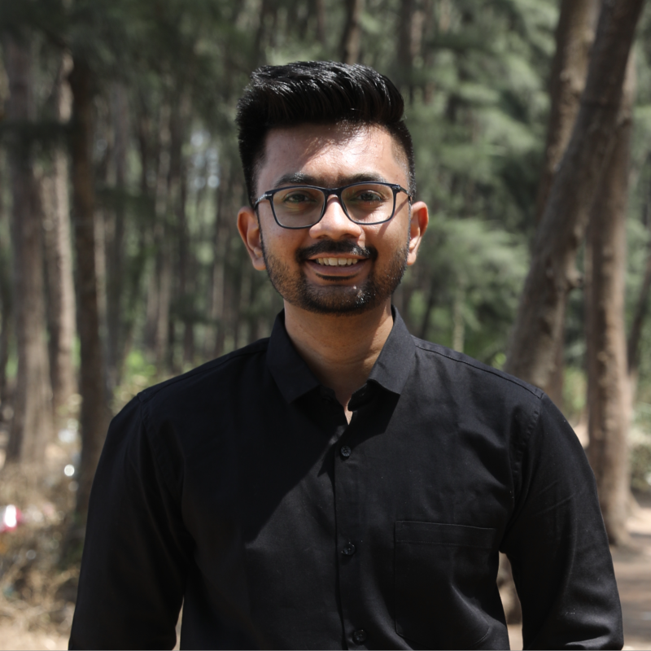

I'm an Operations and Automation professional focused on building practical systems that make businesses more efficient. I design and optimize workflows using no-code automation, AI, and tools like Airtable, Zapier, n8n, Excel, and CRM platforms to reduce manual work and improve day-to-day operations.
My experience spans business operations, workflow design, SOPs, reporting, CRM processes, and cross-functional coordination. I enjoy taking messy or repetitive processes, breaking them down, and turning them into simple, scalable systems that teams can actually use.
Alongside operations, my background in derivatives trading has strengthened my analytical thinking, quantitative approach, and systematic problem-solving skills. I bring that same mindset to building reliable operational systems and solving complex business problems.
I'm passionate about combining Operations + Automation + AI to build smarter systems, eliminate repetitive work, and help businesses scale more efficiently.